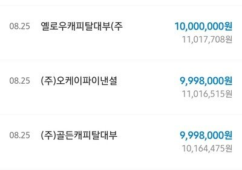
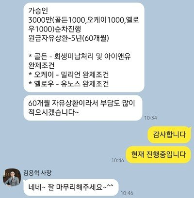

[개인회생자대출] 개인회생 대환대출후기(김용혁사장님)
-----------------------
재직형태 : 직장인
재직기간 : 3년
4대보험 : 유
소득 : 연 4000만원
신용등급 : 300점
기존 채무내역 : 2700만원
필요서류 : 자격득실확인서, 보험료 납부확인서, 주 거래은행 내역 3개월, 주민등록등초본
-----------------------
안녕하세요
개인회생 기존 대출 도중 법정최고금리 인하로 인해 대환대출을 알아보던 도중 문의드려서 승인까지 완료 하였습니다
김용혁 사장님이 신경 써주셔서 대환 및 변제금 미납 조건으로 3000만원 승인났네요..
기존 대출 월 대출 상환금액도 15만원 가량 줄어들고 한도도 늘어나서 매우 만족합니다
감사합니다.

